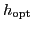
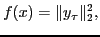
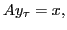
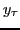
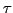

We have developed new mathematical theory and tools for estimating the computational noise that arises in numerical simulations throughout scientific computing [4]. Roundoff errors, discretizations, numerical solutions to systems of equations, and adaptive techniques are among the many sources of computational noise, which can destroy the smoothness of the processes underlying a simulation and complicate optimization, sensitivity analysis, and other applications depending on the simulation output. Our theory is based on a stochastic model but does not assume a specific form (e.g., Gaussian or mean zero) for the distribution of the noise. Our technique is similar to that of Hamming [3] and has been validated empirically on deterministic simulations where the theory does not hold.
In this talk, we use an estimate of the computational noise to address a longstanding problem in derivative estimation: How should finite difference parameters be determined when working with a noisy function?
We have derived optimal finite difference parameters that are easy to compute, depending only on an estimate of the computational noise and a coarse bound on a higher-order derivative (typically requiring just a few additional simulations) [5]. Our estimates,

, come with provable approximation bounds for the resulting mean-squared error between the finite difference estimate and the directional derivative of a smooth function,Here we use the symmetric positive definite matrices in the Florida Sparse Matrix collection [2] to define noisy, deterministic quadratics of the form
 where |

is obtained using an iterative solver with tolerance
. We consider Krylov solvers in MATLAB [1], but the numerical results are similar for other solvers.We use these finite difference estimates to show how computational noise can destroy the accuracy of derived calculations, for example, the computation of derivatives. In some cases, the accuracy of derivative estimates based on function values is many times better than that of finite-precision evaluation of derivatives obtained by hand-coded or automatically differentiated codes. Our experiments also illustrate that the relationship between truncation errors and the computational noise can be surprisingly nonintuitive.